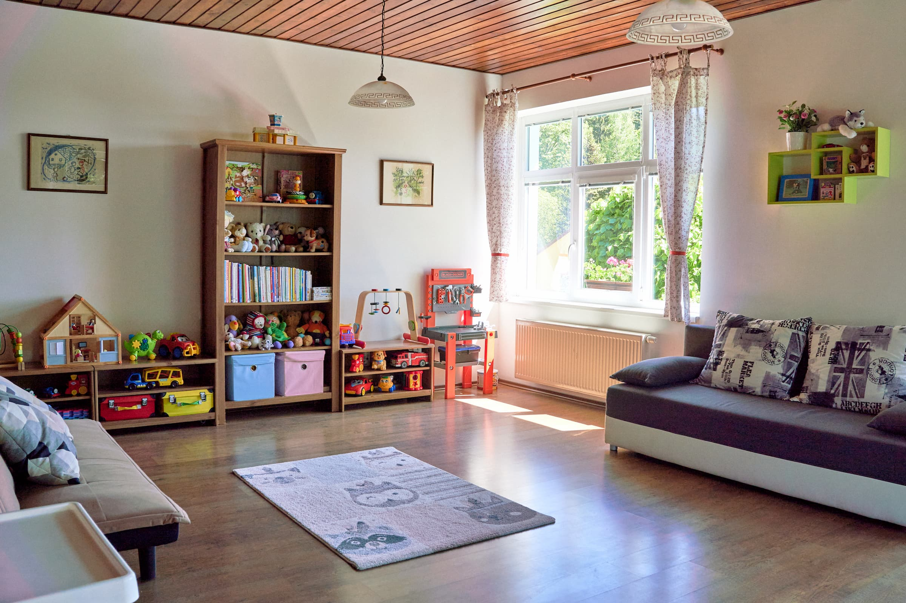

Herna

Náš penzion je často vyhledáván rodinami s malými dětmi a to především díky veliké a dobře vybavené dětské herně. Herna je od jídelny oddělena prosklenými dveřmi, takže rodiče, kteří si chtějí v klidu vychutnat šálek kávy nebo čaje u stolu v jídelně mají své ratolesti stále na dohled.